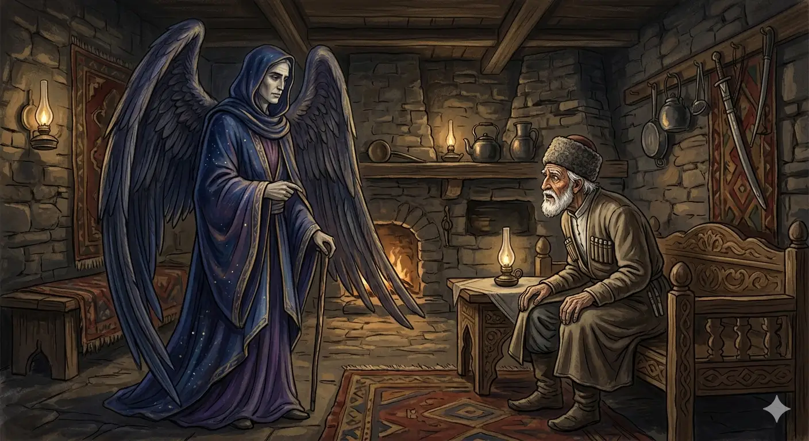

И.А. Дахкильгов. Хьехаме дувцарш - поучительные рассказы-притчи.
И.А. Дахкильгов. Хьехаме дувцарш - поучительные рассказы-притчи. Из ингушского фольклора.

Дукха хоамаш хиннад хьона
Цхьан къонахчои Мулкалмовтои вӀаший доттагӀал тесса хиннад. Ший ха хилча, къонах волча саготалла доагӀаш хиннад Мулкалмовта. Дикка вӀаший дог ийна хиннаб уж. Цкъа шоаш дуаш-молаш багӀаш, Мулкалмовтага аьннад къонахчо: - Ший ханнахьа со а дӀахьоргва Ӏа. Иштта да хьона тӀадужадаь декхар, ха тӀехъяьккхар е хьа е са кара дац, хьога аз из деха а дехац. ЦаӀ-м дехаргда аз хьогара, вай доттагӀий хиларца. Цхьа хӀама де йиш яр хьа: хьалхе а хьахейта сога са Ӏоажала ди. Из хоам Ӏа сона боре, лийча, корта тесса, мӀараш дӀаяха, кийчлургвар со. - Хьалхе а хоамаш хургда хьона, - аьннад Мулкалмовта. Шу-шерага доалаш, дукха ха дӀаяхай. Цкъа цӀагӀа чудаьннача Мулкалмовто аьннад къонахчунга: - Ха хаьдай хьа! Воле, долх вай! - Айя, фуд Ӏа дувцар! Хьох доттагӀа лоархӀаш, хьогара аз Ӏоажалах бола хоам хьалхе бе, аьнна, дийхача, сона жоп ма деннадарий Ӏа! Деша да хӀана хиланзар хьо? - Даьра, хиннад со сай дош чӀоагӀа долаш! ЦаӀ хинна а ца Ӏеш, дукха хиннад хьона хоамаш. Корта кӀайбалар - хоам беце хьона? Сийрдача бӀаргий са мелдалар беце хьона хоам? Багар царгаш йожар хоам беце хьона? Кура леладаь дегӀ букарадерзар беце хьона хоам? Болар кадай хинна хьо халла ши ког текхабеш лелар хоам беце хьона? Кхы мел хоам хьайга байта воаллар хьо? Воле, совдар ца а дувцаш! Ший доттагӀчун са а ийца, сигала хьаладахад Мулкалмовта.
РУССКИЙ
Тебе было много оповещений
Некий мужчина дружил с ангелом смерти Мулкалмовтом, который спешил к нему в гости, как только у ангела выпадало свободное время. Они привязались друг к другу. Однажды они пировали, и мужчина сказал ангелу смерти: "Поскольку мы с тобою друзья, прошу тебя заранее оповестить меня о дне, когда соберешься забрать мою душу. Я бы тогда выкупался, остриг волосы и ногти". Продлить свою жизнь мужчина не просил, потому что он знал, что это не во власти ангела. Дружба их длилась долго, но вот однажды ангел смерти вошел к другу и сказал: - Собирайся, пришла твоя пора! - Как же так! - поразился тот, - ведь я, как друга, просил тебя заранее оповестить меня о приближающемся дне моей смерти! - Мне не было нужды дополнительно оповещать тебя. Тебе и так было много оповещений. Голова твоя поседела - разве это не весть тебе? Твои зоркие глаза потускнели - разве это не весть тебе? Твоя стройная фигура согнулась - разве это не весть тебе? Ходишь ты теперь еле-еле - разве это не весть тебе? Сколько тебя еще нужно было оповещать? Не возмущайся и пошли. Ангел смерти Мулкалмовт забрал душу своего друга и вознесся на небо.
ENGLISH
You've had a lot of notifications
A certain man was friends with Mulkalmowth, the Angel of Death, who would hurry to visit him whenever the angel had a spare moment. They grew very close. One day, whilst they were feasting, the man said to the Angel of Death: 'Since we are friends, I ask you to let me know in advance the day you intend to take my soul. I would then have a bath and trim my hair and nails.' The man did not ask for his life to be prolonged, because he knew that was beyond the angel's power. Their friendship lasted a long time, but one day the Angel of Death came to his friend and said: 'Get ready, your time has come!' 'How can that be!' exclaimed the man, 'I asked you, as a friend, to let me know in advance of the approaching day of my death!' 'I had no need to give you any further warning. You've had plenty of warnings already. Your hair has turned grey - is that not a sign to you? Your keen eyes have dimmed - is that not a sign to you? Your once-slender figure has stooped - is that not a sign to you? You can barely walk now - is that not a sign to you? How many more warnings did you need? Do not be upset; just go. The Angel of Death, Mulkalmovt, took his friend's soul and ascended to heaven.
НОХЧИЙН
Дукха хаамаш хилла хьуна
Цхьан къонахчой Мулкалмовтой вовшах доттагӀалла тесна хилла. Шен хан хилча, къонах волчу сагатталла догӀуш хилла Мулкалмовта. Дикка вовший дог ийна хилла уьш. Цкъа шаьш дууш-молуш бохкуш, Мулкалмовтага аьлла къонахчо: - Шен хеннахьа со а дӀахьур ву ахь. Иштта ду хьуна тӀедожийна декъар, хан тӀехйаккхар йа хьа йа са карахь дац, хьоьга ас иза деха а дехац. Цхьаъ-м доьхур ду ас хьоьгара, вай доттагӀий хиларца. Цхьа хӀума дан йиш йар хьан: хьалхе а схьахаийта соьга сан Ӏожаллан де. И хаам ахь суна бахь, лийча, корта ларга, мӀараш дӀайаха, кечлур вар со. - Хьалхе а хаамаш хир бу хьуна, - аьлла Мулкалмовтас. Шо-шере долуш, дукха хан дӀайахна. Цкъа цӀийне чудаьллачу Мулкалмовто аьлла къонахчуьнга: - Хан схьайеъна хьан! Воло, доьлху вай! - Айя, хӀун ду ахь дуьйцург! Хьох доттагӀ лоруш, хьогара ас Ӏожаллах болу хаам хьалхе бе, аьлла, дийхича, суна жоп ма деллера ахь! Дешан да хӀунда хиланзар хьо? - Дера, хилла со сан дош чӀогӀа долуш! Цхьаъ хилла а ца Ӏаьш, дуккха хилла хьуна хаамаш. Корта кӀайбалар - хаам беций хьуна? Сирлачу бӀаьргий са малдалар беций хьуна хаам? Багар цергаш йожар хаам беций хьуна? Кура леладина дегӀ букарадерзар беций хьуна хаам? Болар каде хилла хьо халла ши ког текхабеш лелар хаам беций хьуна? Кхин мел хаам хьайга байта воллар хьо? Воле, совдар а ца дуьйцуш!
ПОГОВОРКИ
Бил дехка воккха стаг зудала хет. Красящийся старик похох на кокетку. An old man who dyes his hair looks like a coquette. ГӀина диллина воккха стаг зудчаллин хета.Бодж-моарзагӀаца хьувзабеш тӀера корта дӀабоахе а, къонах деналах воха йиш яц. Мужчина не должен терять мужества, даже если его голову будут клещами откручивать. A man must not lose his courage even if his head is twisted off with pincers. Борз-морзахца хьийзабеш тӀера корта дӀабаккхахь а, къонах доьналлех воха йиш йац.Дарбашка даьнна дегӀ пайданна доацача даьннад. Тело, приученное к лекарствам, никуда не годится. A body grown too used to medicine becomes good for nothing. Дарбашка даьлла дегӀ пайденна доцучу даьлла.ДоагӀа мотташ во а дагӀац, дика а дагӀац. И счастье, и несчастье приходят, когда их не ждешь. Neither misfortune nor fortune comes when you expect it. ДогӀа моьттуш вон а дагӀац, дика а дагӀац.Е къавелча е цамогаш хилча мара дагайохац Ӏоажал. О смерти вспоминают или при болезни, или в старости. Death comes to mind only through illness or old age. Йа къанвелча йа цомгуш хилча бен дагайагӀац Ӏожалла.ЖӀали а гаьна да аьнна ма хета, йоагаш йола цӀи а гаьна я аьнна ма хета. Не полагайся на то, что собака и огонь далего от тебя. Don't assume the dog and the fire are far from you. ЖӀаьла а гена ду аьлла ма хета, йогIуш йола цӀе а гена йу аьлла ма хета.ЗагӀашка яьнна гаргало яц, дарбашка даьнна дегӀ а дегӀ дац. Родство, держащееся на деньгах, - не родство; тело, держащееся на лекарствах, - не тело. Kinship held together by money is no kinship; a body held together by medicine is no body. СагӀашка даьлларг гергарло дац, дарбашка даьлла дегӀ а дегӀ дац.Талха доладенна хӀама талхаш-талхаш дӀачакхдалийта деза. Начало портиться (дело) – так пусть уж портится до конца. Once something starts to spoil, let it spoil all the way through. Талха доладелла хӀума телхаш-телхаш дӀачакхдалийта деза.Хьалха, тӀехьа мара доацаш – берригаш Ӏаьхарте кхоачаргба. Кто раньше, кто позже, но все будем на том свете. Sooner or later, we will all reach the other world. Хьалха, тӀаьхьа бен доцуш - берриш эхарте кхочур бу.Хьаьр кхера а сихагӀа мел кхест сихагӀа кхоачалу. Чем дольше жернов крутится, тем быстрее стирается. The longer the millstone turns, the faster it wears down. Хьеран кхера а сихах мел кхеста сихах кхачало.Шу-шерга мел доал саг букара верз, - лаьтто дӀавех из. Из года в год человек горбится – это земля зовет его к себе. As the years pass, a man stoops more and more — the earth is calling him. Шо-шаре мел долу стаг букара воьрзу, - лаьтто дӀавоьху иза.Ӏоажал кога кӀала йоал. Смерть находится под ногами. Death lies just beneath one's feet. Ӏожалла коган кIел йоллу.Ӏоажала ди дег чу лоаттаду саг харцвала йиш яц. Праведно живет тот, кто постоянно помнит о смертном часе. One who keeps the day of death in their heart cannot go astray. Ӏожаллан де дагна чохь латтадо стаг харцвала йиш йац.